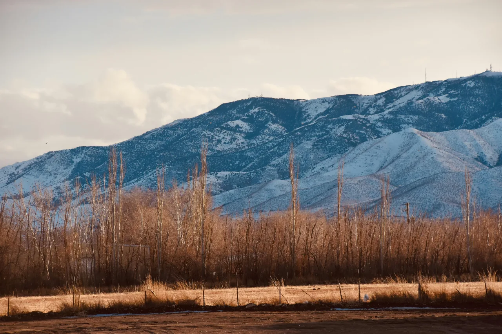

About Utah Weather
Utah has a mostly dry, semi-arid climate with four distinct seasons and significant temperature changes due to elevation. In areas like Salt Lake City, winters are cold with frequent snow, while summers are hot and dry, often reaching into the 90s°F (30s°C). Spring and fall tend to be mild but can be unpredictable, with sudden changes in temperature and weather conditions. Geography plays a major role in Utah’s weather. The nearby Wasatch Range brings cooler temperatures and heavy snowfall to mountain areas, while southern regions like St. George are much warmer year-round. The dry air can make both heat and cold feel more intense, and winter temperature inversions can sometimes trap pollution in valley areas.
Weather
Temperature: 43 °F
Wind Speed: 9 mph
Wind Chill: 38 °F